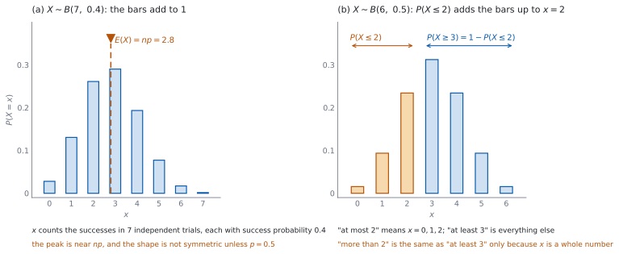

SL 4.8 — The binomial distribution（二項分布）
- binomial distribution（二項分布）が使える \(4\) つの条件を確かめられる。
- \(X \sim B(n, p)\) という書き方の \(n\) と \(p\) を、場面から読み取れる。
- \(P(X = x)\) の形を書け、\(\binom{n}{x}\) が何を数えているかを説明できる。
- 「以下」「以上」「少なくとも」「より多い」を、\(X\) の値の範囲に言いかえられる。
- \(E(X) = np\) と \(\mathrm{Var}(X) = np(1 - p)\) を使える。
- GDC で
binomPdfとbinomCdfを使い、答えの大きさを手で確かめられる。 - ある場面が二項分布で表せるかどうかを判断し、理由を述べられる。
The idea
1. 二項分布が使える \(4\) つの条件
binomial distribution（二項分布）は、同じ試行を決まった回数くり返して、成功の回数を数えるときの分布です。次の \(4\) つがそろっている必要があります。
| 条件 | 意味 |
|---|---|
| 回数が決まっている | 試行の回数 \(n\) が最初から決まっている |
| 結果が \(2\) 通り | 各回の結果は「成功」か「失敗」のどちらか |
| 確率が一定 | 成功の確率 \(p\) が毎回同じ |
| 独立 | 前の回の結果が、次の回の確率を変えない |
\(1\) つでも欠けたら、二項分布ではありません。 とくに、もどさずに取り出す場面では、前に何が出たかで次の確率が変わるので、独立の条件が崩れます（SL 4.6b）。
「成功」は、うれしいこととはかぎりません。 「不良品である」を成功と呼ぶこともあります。数えたいほうを成功にします。
2. \(X \sim B(n, p)\) という書き方
条件がそろったら、成功の回数 \(X\) について
\[ X \sim B(n, p) \tag{1}\]
と書きます。\(\sim\) は「〜という分布に従う」と読みます。
\(X \sim B(n,\ p)\) は、公式集の 4.8 の欄に Binomial distribution として載っています。
\(n\) は試行の回数、\(p\) は \(1\) 回あたりの成功の確率です。 この \(2\) つを場面から正しく読み取ることが、いちばん大事です。
\(X\) のとりうる値は \(0, 1, 2, \ldots, n\) です。 ぜんぶ失敗の \(0\) から、ぜんぶ成功の \(n\) までです。
3. \(P(X = x)\) の形
\(n\) 回のうち、ちょうど \(x\) 回成功する確率は
\[ P(X = x) = \binom{n}{x} p^{x} (1 - p)^{n - x} \tag{2}\]
です。
\(3\) つの部分に分かれています。
- \(p^{x}\) … 成功が \(x\) 回起こる確率
- \((1 - p)^{n - x}\) … 失敗が \(n - x\) 回起こる確率
- \(\binom{n}{x}\) … \(n\) 回のうちどの回が成功かの選び方の数
式 2 そのものは、公式集の 4.8 の欄にはありません。 \(\binom{n}{r}\) は Topic 1 の 1.9（binomial theorem）の欄にあります。
試験では確率を GDC で出すので、この式を使って手で計算する必要はありません。式は、何が起きているかを理解するためのものです。
\(\binom{n}{x}\) を忘れると、答えが小さくなりすぎます。 \(p^{x}(1-p)^{n-x}\) は「決まった順番で」起こる確率で、順番のちがいを数えていません。
4. 「以下」「以上」の言いかえ
問題文のことばを、\(X\) の値の範囲に直します（図 1 (b)）。
| 英語 | 範囲 |
|---|---|
| at most \(2\) / no more than \(2\) | \(X \le 2\) |
| fewer than \(2\) / less than \(2\) | \(X \le 1\) |
| at least \(3\) / no fewer than \(3\) | \(X \ge 3\) |
| more than \(2\) | \(X \ge 3\) |
| exactly \(3\) | \(X = 3\) |
\(X\) が整数だから、こう言いかえられます。 「\(2\) より多い」と「\(3\) 以上」が同じになるのは、\(X\) が整数の値しか取らないからです。
「少なくとも」は、余事象が速いことが多いです。 \(P(X \ge 3) = 1 - P(X \le 2)\) です。
境目を含むかどうかを、必ず確かめてください。 at most 2 は \(2\) を含み、fewer than 2 は含みません。
5. 平均と分散
\(X \sim B(n, p)\) のとき
\[ E(X) = np \tag{3}\]
\[ \mathrm{Var}(X) = np(1 - p) \tag{4}\]
\(E(X) = np\) と \(\mathrm{Var}(X) = np(1-p)\) は、公式集の 4.8 の欄に Mean と Variance として載っています。
分散から標準偏差を出すときは、平方根を取ります。 \(\sigma = \sqrt{np(1-p)}\) です。この式は公式集にありませんが、SL 4.3 のとおり分散は標準偏差の \(2\) 乗です。
Not required: Formal proof of mean and variance.
証明は求められません。 ただし、\(E(X) = np\) が自然なことは、SL 4.5 の期待される回数と同じ形だと気づけば分かります。
\(n\) を決めておくと、\(\mathrm{Var}(X)\) は \(p = 0.5\) のとき最大になります。 \(p(1-p)\) が \(p = 0.5\) で最大だからです。
6. モデルとして適切か
二項分布は、現実をそのまま写したものではありません。 表 1 の \(4\) 条件がどれくらい成り立つかを見て、使ってよいかを判断します。
よくある崩れ方が \(3\) つあります。
- もどさずに取り出す。 \(1\) 回目の結果が分かると、\(2\) 回目の確率が変わります。ただし、母集団がとても大きければ、変わり方はごくわずかです。
- 回ごとに確率が変わる。 練習で上達する、天気が続く、など。
- 回どうしが影響しあう。 同じ家に住む人、同じ日に同じ場所で測った測定値、など。
判断を書くときは、どの条件が問題かを名指しします。 「独立でないから」だけでなく、「\(1\) 個目を取ったあと残りが減るので、\(2\) 回目の確率が変わるから」まで書きます。
7. 答えの読み方
確率は \(0\) 以上 \(1\) 以下です。 ここを外したら、入力がまちがっています。
\(P(X = x)\) がいちばん大きくなるのは、\(np\) の近くです（図 1 (a)）。答えが \(np\) から遠い \(x\) で大きな値になっていたら、疑ってください。
\(E(X) = np\) は「\(n\) 回のうち期待される成功の回数」です。 SL 4.5 の期待される回数と同じものです。
\(p = 0.5\) のときだけ、分布は左右対称になります。 それ以外は、どちらかに寄ります。
シラバスは、二項分布の確率をGDC で求めるとしています。だから、確率の数値を出す問題は Paper 2 で出ます。
単元全体が Paper 1 の対象外というわけではありません。 二項分布として扱ってよいかの判断、\(E(X) = np\)、\(p = 0.5\) のときの対称性、確率の式の形は、電卓なしでも問われます。
答えの見当も、手でつけられます。 \(0 \le P \le 1\)、\(np\) の近くが大きい、\(E(X) = np\) ——この \(3\) つで、入力ミスのほとんどは見つかります。

Why it works
なぜ、\(\binom{n}{x}\) をかけるのでしょうか。 \(n\) 回のうち、成功が起こる回を選ぶ選び方が何通りあるかを数えているからです。
たとえば \(n = 4\)、\(x = 2\) なら、成功する回の選び方は \(\binom{4}{2} = 6\) 通りです。どの \(1\) 通りも、確率は \(p^{2}(1-p)^{2}\) で同じです。同じ確率のものが \(6\) 通りあるので、足すとかけ算になります。
「決まった順番で」の確率が \(p^{x}(1-p)^{n-x}\) になるのは、独立だからです。 各回が独立なので、枝に沿ってかけられます（SL 4.6b）。成功が \(x\) 回、失敗が \(n - x\) 回あるので、この形になります。
もどさない場合は、この議論が崩れます。 \(2\) 回目の確率が \(1\) 回目によって変わるので、\(p^{x}(1-p)^{n-x}\) の形になりません。
なぜ、全部足すと \(1\) になるのでしょうか。 \(x = 0\) から \(n\) まで足すと
\[ \sum_{x=0}^{n} \binom{n}{x} p^{x}(1-p)^{n-x} = \bigl(p + (1-p)\bigr)^{n} = 1^{n} = 1 \]
です。これは SL 1.9 の binomial theorem そのものです。二項定理の展開が、そのまま確率の合計になっています。
なぜ、\(E(X) = np\) が自然なのでしょうか。 \(1\) 回あたり平均 \(p\) 回成功する、と考えるからです。\(n\) 回くり返せば、平均は \(n\) 倍の \(np\) になります。
この見方は、SL 4.5 の期待される回数と同じです。 \(1\) 回あたりの確率に回数をかける、という形が共通しています。
\(E(X) = np\) そのものには、独立性は要りません。 \(1\) 回ごとの成功確率がどれも \(p\) なら、回どうしに関係があっても、成功回数の期待値は \(np\) です。赤 \(2\) 個・白 \(2\) 個から、もどさずに \(2\) 個取るとき、\(1\) 回目も \(2\) 回目も赤が出る確率は \(\dfrac{1}{2}\) なので、赤の個数の期待値は \(2 \times \dfrac{1}{2} = 1\) です。
独立性が要るのは、ここで \(X\) を二項分布として扱うためです。 式 2 の確率の式と、式 4 の \(\mathrm{Var}(X) = np(1-p)\) は、表 1 の \(4\) 条件がそろって初めて使えます。
なぜ、\(\mathrm{Var}(X)\) が \(p = 0.5\) で最大になるのでしょうか。 \(p(1-p)\) を平方完成すると
\[ p(1-p) = -\left(p - \frac{1}{2}\right)^{2} + \frac{1}{4} \]
なので、\(p = \dfrac{1}{2}\) で最大値 \(\dfrac{1}{4}\) を取ります。結果が読みにくいのは、五分五分のときです。 \(p\) が \(0\) や \(1\) に近いと、結果はほぼ決まっているので、ばらつきが小さくなります。
Worked examples
問題文は英語です。意味が理解できなかったら、問題文の下の「日本語訳」を開いてください。解説は日本語です。
確率の数値は GDC で出します（Paper 2）。 それ以外の判断や式の形は、電卓なしでも進めます。GDC を使うのは例題 \(1\)・\(2\)・\(4\)(c) です。例題 \(3\) と例題 \(4\)(a)(b)(d) は電卓なしで解けます。答えは有効数字 \(3\) 桁（\(3\) significant figures）で書きます。\(0.0781\) のように、\(0\) が続く数では小数の桁数が増えます。
例題 1 The random variable \(X\) follows the distribution \(X \sim B(8,\ 0.25)\).
(a) Find \(P(X = 2)\).
(b) Find \(P(X \le 2)\).
(c) Find \(P(X \ge 3)\).
(d) Find \(E(X)\) and \(\mathrm{Var}(X)\).
日本語訳
確率変数 \(X\) は \(X \sim B(8,\ 0.25)\) に従います。
(a) \(P(X = 2)\) を求めなさい。
(b) \(P(X \le 2)\) を求めなさい。
(c) \(P(X \ge 3)\) を求めなさい。
(d) \(E(X)\) と \(\mathrm{Var}(X)\) を求めなさい。
(a) binomPdf(8, 0.25, 2) を使います（GDC の節）。
\[ P(X = 2) = 0.311 \ (3 \text{ s.f.}) \]
(b) binomCdf(8, 0.25, 0, 2) を使います（GDC の節）。
\[ P(X \le 2) = 0.679 \ (3 \text{ s.f.}) \]
(c) 余事象を使います（第 4 節）。
\[ P(X \ge 3) = 1 - P(X \le 2) = 1 - 0.6785\ldots = 0.321 \ (3 \text{ s.f.}) \]
\[ E(X) = 8 \times 0.25 = 2 \]
\[ \mathrm{Var}(X) = 8 \times 0.25 \times 0.75 = 1.5 \]
検算（(a) について、\(np\) との位置で）。 \(np = 2\) なので、\(x = 2\) はいちばん高い棒の近くです。\(0.311\) という大きめの値になるのは自然です ✓ ここが \(0.03\) のような小さい値なら、入力を疑います。
検算（(b) について、(a) との大小で）。 \(P(X \le 2)\) は \(P(X = 2)\) を含むので、\(P(X = 2)\) より大きいはずです。\(0.679 > 0.311\) ✓
検算（(c) について、別の入力で）。 binomCdf(8, 0.25, 3, 8) を直接使うと \(0.3214\ldots\) です ✓ 引き算で出した \(0.321\) と一致しました。ここが合わなければ、(b) の上端か (c) の下端を \(1\) ずれて入れています。
検算（(d) について、\(0\) と \(n\) の間か）。 \(E(X) = 2\) は \(0\) と \(8\) の間にあります ✓ また \(\mathrm{Var}(X) = 1.5\) は \(np = 2\) より小さいはずで、\(1 - p = 0.75 < 1\) をかけているのでそうなります ✓
(a) binomPdf\((8, 0.25, 2)\) \[P(X = 2) = 0.311\]
(b) binomCdf\((8, 0.25, 0, 2)\) \[P(X \le 2) = 0.679\]
(c) \[P(X \ge 3) = 1 - 0.6785\ldots = 0.321\]
(d) \[E(X) = 8(0.25) = 2, \qquad \mathrm{Var}(X) = 8(0.25)(0.75) = 1.5\]
例題 2 A basketball player scores from a free throw with probability \(0.8\), independently of all other throws. She takes \(10\) free throws. Let \(X\) be the number she scores.
(a) Find \(P(X = 9)\).
(b) Find \(P(X \ge 8)\).
(c) Find \(E(X)\).
(d) Interpret your answer to part (c) in the context of the question.
日本語訳
あるバスケットボール選手は、フリースローを確率 \(0.8\) で決めます。各回は他の回と独立です。この選手が \(10\) 回フリースローを打ちます。決めた回数を \(X\) とします。
(a) \(P(X = 9)\) を求めなさい。
(b) \(P(X \ge 8)\) を求めなさい。
(c) \(E(X)\) を求めなさい。
(d) (c) の答えを、この問題の文脈で解釈しなさい。
\(4\) 条件を確かめます（表 1）。回数は \(10\) 回で決まっていて、各回は決めるか外すかの \(2\) 通り、確率はいつも \(0.8\)、各回は独立です。だから \(X \sim B(10,\ 0.8)\) です。
(a) binomPdf(10, 0.8, 9) を使います。
\[ P(X = 9) = 0.268 \ (3 \text{ s.f.}) \]
(b) \(X \ge 8\) は \(X = 8, 9, 10\) です。binomCdf(10, 0.8, 8, 10) を使います。
\[ P(X \ge 8) = 0.678 \ (3 \text{ s.f.}) \]
(c) 式 3 を使います。
\[ E(X) = 10 \times 0.8 = 8 \]
(d) Interpret なので、英語で書きます。
試験ではこう書く
If the player took \(10\) free throws many times over, she would score \(8\) of them on average. It is not a promise that she scores exactly \(8\) in any one set of \(10\): the number scored varies from set to set.
（この選手が \(10\) 回のセットを何度もくり返せば、平均して \(8\) 回決めることになる。\(1\) セットでちょうど \(8\) 回決まる保証ではない。決まる回数はセットごとにばらつく、という意味です。）
検算（(a) について、\(np\) との位置で）。 \(np = 8\) なので、\(x = 9\) は山のすぐ右です。\(0.268\) という大きめの値は自然です ✓
検算（(b) について、(a) との大小で）。 \(P(X \ge 8)\) は \(P(X = 9)\) を含むので、\(0.268\) より大きいはずです。\(0.678 > 0.268\) ✓
検算（(b) について、余事象で）。 binomCdf(10, 0.8, 0, 7) は \(0.3222\ldots\) で、\(1 - 0.3222\ldots = 0.678\) ✓ 別の入力でも同じ値になりました。
検算（(c) について、\(0\) と \(n\) の間か）。 \(0 \le 8 \le 10\) ✓ \(p\) が大きいので、\(E(X)\) が \(n\) の近くになるのは自然です。
\(X \sim B(10,\ 0.8)\)
(a) \[P(X = 9) = 0.268\]
(b) \[P(X \ge 8) = 0.678\]
(c) \[E(X) = 10(0.8) = 8\]
(d) over many sets of \(10\) throws she would score \(8\) on average; any one set of \(10\) can give a different number
例題 3 A gardener plants \(15\) seeds from a large packet. The packet states that each seed germinates with probability \(0.8\), and the seeds behave independently. Let \(X\) be the number of seeds that germinate.
(a) Explain why \(X\) can be modelled by a binomial distribution, and state the values of \(n\) and \(p\).
(b) Find \(P(X = 13)\).
(c) Find \(P(X \ge 13)\).
(d) Find \(E(X)\) and \(\mathrm{Var}(X)\).
日本語訳
ある庭師が、大きな袋から \(15\) 個の種をまきます。袋には、各種が確率 \(0.8\) で発芽し、種どうしは独立であると書かれています。発芽する種の個数を \(X\) とします。
(a) \(X\) が二項分布で表せる理由を説明し、\(n\) と \(p\) の値を書きなさい。
(b) \(P(X = 13)\) を求めなさい。
(c) \(P(X \ge 13)\) を求めなさい。
(d) \(E(X)\) と \(\mathrm{Var}(X)\) を求めなさい。
(a) Explain why なので、英語で理由を書きます。
試験ではこう書く
There is a fixed number of \(15\) seeds, each seed either germinates or does not, the probability of germinating is stated to be \(0.8\) for every seed, and the seeds are stated to behave independently. All four conditions hold, so \(X \sim B(15,\ 0.8)\), with \(n = 15\) and \(p = 0.8\).
（\(15\) 個という決まった回数があり、各種は発芽するかしないかの \(2\) 通りで、確率はどの種も \(0.8\) と書かれており、種どうしは独立と書かれている。\(4\) 条件がそろうので \(X \sim B(15,\ 0.8)\) である、という意味です。）
(b) binomPdf(15, 0.8, 13) を使います。
\[ P(X = 13) = 0.231 \ (3 \text{ s.f.}) \]
(c) \(X \ge 13\) は \(X = 13, 14, 15\) です。binomCdf(15, 0.8, 13, 15) を使います。
\[ P(X \ge 13) = 0.398 \ (3 \text{ s.f.}) \]
\[ E(X) = 15 \times 0.8 = 12, \qquad \mathrm{Var}(X) = 15 \times 0.8 \times 0.2 = 2.4 \]
検算（(a) について、\(4\) つ全部に触れたか）。 自分の答えに「\(15\) 個」「発芽するかしないか」「\(0.8\) がどの種も同じ」「独立」の \(4\) つがそろっているかを数えます ✓ \(3\) つしかなければ、\(1\) つ落としています。
補足（袋の大きさ）。 「大きな袋」と書いてあるので、\(15\) 個取っても残りの割合はほとんど変わりません。小さな袋なら、もどさない取り出しになって独立が崩れます。
検算（(c) について、(b) との大小で）。 \(P(X \ge 13)\) は \(P(X = 13)\) を含むので、\(0.231\) より大きいはずです。\(0.398 > 0.231\) ✓
検算（(c) について、余事象で）。 binomCdf(15, 0.8, 0, 12) は \(0.6019\ldots\) で、\(1 - 0.6019\ldots = 0.398\) ✓
検算（(b) について、標準偏差で）。 \(\sqrt{2.4} \approx 1.55\) です。\(E(X) = 12\) から \(2\) 標準偏差の範囲はおよそ \(8.9\) から \(15\) で、\(13\) はこの中に入ります ✓ だから \(P(X = 13)\) が小さすぎないのは自然です。
検算（(d) について、大小で）。 \(\mathrm{Var}(X) = 2.4\) は \(np = 12\) より小さいはずです ✓ \(1 - p = 0.2 < 1\) をかけているからです。ここが \(12\) より大きければ、\(p\) と \(1 - p\) を取りちがえています。
(a) fixed number of \(15\) trials; each seed germinates or does not; \(P = 0.8\) each time; seeds independent — so \(X \sim B(15,\ 0.8)\), \(n = 15\), \(p = 0.8\)
(b) \[P(X = 13) = 0.231\]
(c) \[P(X \ge 13) = 0.398\]
(d) \[E(X) = 12, \qquad \mathrm{Var}(X) = 2.4\]
例題 4 The random variable \(X\) follows the distribution \(X \sim B(12,\ p)\) and \(E(X) = 4.8\).
(a) Find the value of \(p\).
(b) Find \(\mathrm{Var}(X)\).
(c) Find \(P(X = 5)\).
(d) Comment on whether a value of \(X = 12\) would be surprising.
日本語訳
確率変数 \(X\) は \(X \sim B(12,\ p)\) に従い、\(E(X) = 4.8\) です。
(a) \(p\) の値を求めなさい。
(b) \(\mathrm{Var}(X)\) を求めなさい。
(c) \(P(X = 5)\) を求めなさい。
(d) \(X = 12\) という値が意外かどうかについて述べなさい。
(a) 式 3 を \(p\) について解きます。
\[ 12p = 4.8, \qquad p = 0.4 \]
(b) 式 4 を使います。
\[ \mathrm{Var}(X) = 12 \times 0.4 \times 0.6 = 2.88 \]
(c) binomPdf(12, 0.4, 5) を使います。
\[ P(X = 5) = 0.227 \ (3 \text{ s.f.}) \]
(d) Comment on なので、英語で書きます。
試験ではこう書く
The mean is \(4.8\) and the standard deviation is \(\sqrt{2.88} \approx 1.70\), so \(X = 12\) lies more than four standard deviations above the mean. Its probability is binomPdf\((12, 0.4, 12) \approx 1.7 \times 10^{-5}\), which is very small, so a value of \(12\) would be surprising.
（平均は \(4.8\)、標準偏差は約 \(1.70\) なので、\(X = 12\) は平均より \(4\) 標準偏差以上大きい。その確率は約 \(1.7 \times 10^{-5}\) で非常に小さいので、\(12\) という値は意外である、という意味です。）
検算（(a) について、もどします）。 \(12 \times 0.4 = 4.8\) ✓ 与えられた \(E(X)\) と一致します。
検算（(a) について、範囲で）。 \(0 \le 0.4 \le 1\) ✓ ここを外したら、\(n\) と \(E(X)\) を取りちがえています。
検算（(b) について、大小で）。 \(\mathrm{Var}(X) = 2.88\) は \(np = 4.8\) より小さいはずです ✓ \(1 - p = 0.6 < 1\) をかけているからです。
検算（(c) について、\(np\) との位置で）。 \(np = 4.8\) なので、\(x = 5\) は山のてっぺんのすぐ近くです。\(0.227\) という大きめの値は自然です ✓
(a) \[12p = 4.8 \implies p = 0.4\]
(b) \[\mathrm{Var}(X) = 12(0.4)(0.6) = 2.88\]
(c) \[P(X = 5) = 0.227\]
(d) \(\sqrt{2.88} \approx 1.70\), so \(12\) is over four standard deviations above the mean of \(4.8\), and \(P(X = 12) \approx 1.7 \times 10^{-5}\): it would be surprising
Common errors
とくにもどさずに取り出す場面では、確率が変わります（表 1）。
\(n\) は回数、\(p\) は \(1\) 回あたりの確率です（式 1）。\(p\) が \(1\) をこえたら、取りちがえています。
\(p^{x}(1-p)^{n-x}\) だけでは、順番のちがいを数えていません（第 3 節）。答えが小さくなりすぎます。
at most と fewer than を取りちがえる
at most 2 は \(X \le 2\)、fewer than 2 は \(X \le 1\) です（表 2）。境目を含むか確かめてください。
\(\mathrm{Var}(X) = np(1-p)\) です（式 4）。標準偏差はその平方根です。
\(E(X)\) は長い目で見た平均です（SL 4.7）。\(np\) が整数でないこともあります。
Using your GDC (TI-Nspire CX II)
以下は TI-Nspire CX II の操作です。ほかの機種では名前がちがいます。
手順は答案に書きません。 書くのは、使った関数と入れた数（binomPdf(8, 0.25, 2) など）と、出た答えです。
1. ちょうど \(x\) 回：binomPdf
計算画面で menu → Statistics → Distributions を開き、二項分布の Pdf を選びます。
入れるのは \(3\) つです。 binomPdf(n, p, x) の順に、試行の回数・成功の確率・成功の回数を入れます。
\(x\) を \(0, 1, 2, \ldots\) と変えて入れれば、どの \(x\) が大きいかが見られます。
2. 範囲：binomCdf
同じ Distributions の中の、二項分布の Cdf を選びます。
入れるのは \(4\) つです。 binomCdf(n, p, lower, upper) の順に、回数・確率・下端・上端を入れます。
binomCdf の使い分け
| 求めたいもの | 入れ方 |
|---|---|
| \(P(X \le 2)\) | binomCdf(n, p, 0, 2) |
| \(P(X \ge 3)\) | binomCdf(n, p, 3, n) |
| \(P(3 \le X \le 5)\) | binomCdf(n, p, 3, 5) |
下端と上端は、どちらも含みます。 at most 2 なら上端は \(2\)、fewer than 2 なら上端は \(1\) です。
\(P(X \ge 3)\) は \(1 -\) binomCdf(n, p, 0, 2) でも出ます。 どちらでもかまいません。
3. 入力を確かめる
まず \(np\) を暗算します。 出た確率が \(np\) の近くの \(x\) で小さすぎたら、\(p\) を \(0.04\) と \(0.4\) のように桁ちがいで入れていないかを見ます。
\(0 \le P \le 1\) を見ます。 これを外したら、入力の順番がちがいます。
binomPdf の \(x\) を \(1\) つずつ変えて、いちばん大きくなる \(x\) を見ます。 それが \(np\) の近くでなければ、\(p\) の入力を疑います。
変数の欄に文字が残っていないか確かめてください。 前の問題の値が残っていることがあります。
Exercises
各問題に、折りたたみが \(3\) つ付いています。日本語訳、解答例（答案用紙に書くべきこと。英語です。英語の答案例が付くものもあります）、解説（なぜそうなるか。日本語です）。
まず自分で解いて、次に解答例と見くらべてください。解説は、合わなかったときだけ開けば十分です。
GDC を使うのは \(1\)・\(3\)・\(4\)・\(7\) です。 \(2\)・\(5\)・\(6\)・\(8\)・\(9\)・\(10\) は電卓なしで解けます。
1 The random variable \(X\) follows the distribution \(X \sim B(6,\ 0.3)\). Find \(P(X = 2)\) and \(P(X \le 1)\).
日本語訳
確率変数 \(X\) は \(X \sim B(6,\ 0.3)\) に従います。\(P(X = 2)\) と \(P(X \le 1)\) を求めなさい。
binomPdf\((6, 0.3, 2)\) \[P(X = 2) = 0.324\]
binomCdf\((6, 0.3, 0, 1)\) \[P(X \le 1) = 0.420\]
\(1\) つ目は binomPdf、\(2\) つ目は binomCdf です（GDC の節）。\(X \le 1\) は \(X = 0\) と \(X = 1\) です。
検算（\(np\) との位置で）。 \(np = 6 \times 0.3 = 1.8\) です。\(x = 2\) は山のすぐ近くなので、\(0.324\) という大きめの値は自然です ✓
検算（範囲で）。 どちらも \(0\) 以上 \(1\) 以下です ✓
検算（別の入力で）。 \(P(X \le 1)\) は binomPdf(6, 0.3, 0) と binomPdf(6, 0.3, 1) を足しても出ます。\(0.117649 + 0.302526 = 0.420175\) ✓
2 In a large batch of components, \(15\%\) are faulty. A sample of \(20\) components is taken from the batch, and \(X\) is the number that are faulty. The batch is large compared with the sample, so the components may be treated as independent. Using a binomial model, find \(E(X)\) and \(\mathrm{Var}(X)\). Interpret the value of \(E(X)\) for someone checking such a sample.
日本語訳
大量の部品のうち \(15\%\) が不良品です。その中から \(20\) 個の標本を取り、不良品の個数を \(X\) とします。バッチは標本にくらべて十分大きいので、各部品は独立とみなしてよいものとします。二項モデルを用いて \(E(X)\) と \(\mathrm{Var}(X)\) を求めなさい。このような標本を調べる人にとって \(E(X)\) の値が何を意味するかを解釈しなさい。
treating the components as independent, \(X \sim B(20,\ 0.15)\)
\[E(X) = 20(0.15) = 3\]
\[\mathrm{Var}(X) = 20(0.15)(0.85) = 2.55\]
on average \(3\) of the \(20\) are faulty; any one sample of \(20\) may contain more or fewer
取り出しは、ほんとうは非復元です。 \(1\) 個取るごとに、残りの中の不良品の割合は少し変わります。だから \(X\) の分布は、厳密には二項分布ではありません。
「バッチは標本にくらべて十分大きい」ので、その変化は無視できます。 問題文がそう断っているので、独立とみなして二項モデルで近似します（第 6 節）。式 3 と 式 4 を使います。
\(E(X) = np = 3\) は、非復元でも成り立ちます（第 5 節）。いっぽう \(\mathrm{Var}(X) = 2.55\) は、独立とみなしたモデルでの値です。\(2\) つを混同しないでください。
検算（範囲で）。 \(0 \le 3 \le 20\) ✓ \(E(X)\) は \(0\) と \(n\) の間にあります。
検算（\(\mathrm{Var}(X)\) の大小）。 \(2.55 < 3 = np\) ✓ \(1 - p = 0.85 < 1\) をかけているので、そうなります。
検算（標準偏差で）。 \(\sqrt{2.55} \approx 1.60\) です。\(3 \pm 1.6\) はおよそ \(1.4\) から \(4.6\) で、\(20\) 個中の不良品の個数として自然な幅です ✓
試験ではこう書く
Over many samples of \(20\) components, the mean number of faulty ones is \(3\). It does not say that every sample contains exactly \(3\): the number varies from sample to sample, and the standard deviation \(\sqrt{2.55} \approx 1.60\) shows that values a little above or below \(3\) are common.
3 A fair coin is flipped \(12\) times and \(X\) is the number of heads. Find \(P(X = 7)\) and \(P(X \ge 7)\).
日本語訳
公平なコインを \(12\) 回投げ、表の回数を \(X\) とします。\(P(X = 7)\) と \(P(X \ge 7)\) を求めなさい。
\(X \sim B(12,\ 0.5)\)
binomPdf\((12, 0.5, 7)\) \[P(X = 7) = 0.193\]
binomCdf\((12, 0.5, 7, 12)\) \[P(X \ge 7) = 0.387\]
公平なコインなので \(p = 0.5\)、\(n = 12\) です。\(X \ge 7\) は binomCdf(12, 0.5, 7, 12) です。
検算（対称性で）。 \(p = 0.5\) なので分布は左右対称です（第 7 節）。だから \(P(X \ge 7) = P(X \le 5)\) になるはずです。binomCdf(12, 0.5, 0, 5) は \(0.387\) ✓
検算（\(3\) つに分けて）。 \(P(X \le 5) + P(X = 6) + P(X \ge 7) = 1\) です。\(0.387 + 0.226 + 0.387 = 1\) ✓
\(P(X \ge 7)\) は \(\dfrac{1}{2}\) ではありません。 \(X = 6\) のぶんが真ん中に残るからです。
4 A machine produces components, and \(4\%\) of them are faulty, independently of each other. A box contains \(25\) components. Find the probability that the box contains fewer than two faulty components.
日本語訳
ある機械が部品を作り、そのうち \(4\%\) が不良品です。各部品は互いに独立です。箱に \(25\) 個の部品が入っています。不良品が \(2\) 個未満である確率を求めなさい。
\(X \sim B(25,\ 0.04)\)
binomCdf\((25, 0.04, 0, 1)\) \[P(X \le 1) = 0.736\]
fewer than two は \(X \le 1\) です（表 2）。\(2\) は含みません。\(4\%\) は \(p = 0.04\) です。
検算（\(np\) との位置で）。 \(np = 25 \times 0.04 = 1\) です。\(X \le 1\) は山をまるごと含むので、\(0.5\) より大きくなるはずです。\(0.736 > 0.5\) ✓
検算（分けて足します）。 binomPdf(25, 0.04, 0) は \(0.3604\)、binomPdf(25, 0.04, 1) は \(0.3754\) です。\(0.3604 + 0.3754 = 0.7358\) ✓
\(4\%\) を \(4\) と入れないでください。 \(p\) は \(0\) と \(1\) の間の数です（第 2 節）。
5 Five cards are dealt from a standard pack of \(52\) cards, without replacement. Let \(X\) be the number of hearts among the five cards. Explain whether \(X\) can be modelled by a binomial distribution.
日本語訳
\(52\) 枚の標準的なトランプから、\(5\) 枚をもどさずに配ります。その \(5\) 枚のうちハートの枚数を \(X\) とします。\(X\) が二項分布で表せるかどうかを説明しなさい。
no; the cards are dealt without replacement, so the probability of a heart changes after each card and the trials are not independent
\(4\) 条件のうち、どれが崩れるかを名指しします（表 1・第 6 節）。回数は \(5\) で決まっていて、結果も \(2\) 通りですが、各回が独立ではありません。
検算（実際に変わるか）。 \(1\) 枚目がハートである確率は \(\dfrac{13}{52} = \dfrac{1}{4}\) です。\(1\) 枚目がハートだったとき、\(2\) 枚目がハートである確率は \(\dfrac{12}{51}\) で、\(\dfrac{1}{4}\) とちがいます ✓
検算（大きな山なら）。 もし \(52\) 枚ではなく \(52000\) 枚から \(5\) 枚取るなら、\(\dfrac{12999}{51999}\) は \(\dfrac{1}{4}\) にとても近くなります ✓ 母集団が大きければ、二項分布で近似できます。
試験ではこう書く
No. The cards are dealt without replacement, so the probability that a card is a heart depends on the cards already dealt: it is \(\dfrac{13}{52}\) for the first card but \(\dfrac{12}{51}\) for the second if the first was a heart. The trials are therefore not independent, so the binomial model does not apply.
6 The random variable \(X\) follows the distribution \(X \sim B(n,\ 0.6)\) and \(E(X) = 18\). Find the value of \(n\) and the value of \(\mathrm{Var}(X)\).
日本語訳
確率変数 \(X\) は \(X \sim B(n,\ 0.6)\) に従い、\(E(X) = 18\) です。\(n\) の値と \(\mathrm{Var}(X)\) の値を求めなさい。
\[0.6n = 18 \implies n = 30\]
\[\mathrm{Var}(X) = 30(0.6)(0.4) = 7.2\]
7 A quiz has \(10\) multiple-choice questions, each with four options and exactly one correct answer. A student guesses every answer at random. Find the probability that the student gets at least \(5\) questions right. Interpret this probability for a teacher deciding whether \(5\) correct answers is good evidence of knowledge.
日本語訳
ある小テストには \(10\) 問の選択問題があり、各問に \(4\) つの選択肢があって正解はちょうど \(1\) つです。ある生徒がすべてを無作為に当てずっぽうで答えます。少なくとも \(5\) 問正解する確率を求めなさい。「\(5\) 問正解は知識があることの十分な証拠か」を判断しようとしている先生にとって、この確率が何を意味するかを解釈しなさい。
\(X \sim B(10,\ 0.25)\)
binomCdf\((10, 0.25, 5, 10)\) \[P(X \ge 5) = 0.0781\]
about \(7.8\%\) of guessers reach \(5\) correct, so \(5\) correct is not strong evidence on its own
\(4\) 択なので \(p = \dfrac{1}{4} = 0.25\)、\(n = 10\) です。at least 5 は \(X \ge 5\) です。
検算（\(np\) との位置で）。 \(np = 2.5\) なので、\(5\) は平均よりかなり上です。だから確率は小さくなるはずです。\(0.0781 < 0.5\) ✓
検算（余事象で）。 binomCdf(10, 0.25, 0, 4) は \(0.9219\) で、\(1 - 0.9219 = 0.0781\) ✓
検算（標準偏差で）。 \(\sqrt{10 \times 0.25 \times 0.75} \approx 1.37\) です。\(5\) は平均 \(2.5\) から約 \(1.8\) 標準偏差上なので、「まれだが、ときどき起こる」くらいの位置です ✓ \(0.0781\) は \(\dfrac{1}{2}\) よりずっと小さく、\(0.001\) ほど小さくもない、という大きさの見当と合っています。
試験ではこう書く
About \(7.8\%\) of students who guess every answer would still get at least \(5\) right. That is not a rare event, so reaching \(5\) correct answers on its own is weak evidence that the student knows the material. A teacher wanting stronger evidence would need a higher score, more questions, or both.
8 The random variable \(X\) follows the distribution \(X \sim B(n,\ 0.2)\).
(a) Write down an expression for \(P(X = 0)\) in terms of \(n\). Explain why the binomial coefficient equals \(1\) in this case.
(b) Find the least value of \(n\) for which \(P(X \ge 1) > 0.95\).
日本語訳
確率変数 \(X\) は \(X \sim B(n,\ 0.2)\) に従います。
(a) \(P(X = 0)\) を \(n\) を使って表しなさい。また、この場合に二項係数が \(1\) になる理由を説明しなさい。
(b) \(P(X \ge 1) > 0.95\) となる最小の \(n\) の値を求めなさい。
(a) \[P(X = 0) = \binom{n}{0}(0.2)^{0}(0.8)^{n} = 0.8^{n}\] there is only one way to have no successes, so \(\binom{n}{0} = 1\)
(b) \[P(X \ge 1) = 1 - 0.8^{n} > 0.95 \iff 0.8^{n} < 0.05\]
\(0.8^{13} = 0.0550\) and \(0.8^{14} = 0.0440\), so the least value is \(n = 14\)
(a) 式 2 に \(x = 0\) を入れます。\(\binom{n}{0}\) は「\(n\) 回のうち成功する回を \(0\) 個選ぶ選び方の数」なので、\(1\) 通りです（第 3 節）。\((0.2)^{0} = 1\) なので、残るのは \(0.8^{n}\) だけです。
試験ではこう書く
Putting \(x = 0\) into the binomial formula gives \(P(X = 0) = \binom{n}{0}(0.2)^{0}(0.8)^{n} = 0.8^{n}\). The coefficient \(\binom{n}{0}\) counts the ways of choosing which trials are successes, and there is exactly one way to have no successes at all, so \(\binom{n}{0} = 1\).
(b) \(P(X \ge 1)\) は余事象で書きかえます（第 4 節）。
\(0.8^{n}\) は \(n\) が大きくなるほど小さくなるので、\(0.05\) をはじめて下回る \(n\) を探します。表を作るか、binomCdf(n, 0.2, 0, 0) の \(n\) を増やして調べます。
検算（GDC で別の道から）。 binomCdf(13, 0.2, 0, 0) は \(0.0550\)、binomCdf(14, 0.2, 0, 0) は \(0.0440\) です ✓ 手で出した \(0.8^{n}\) と一致しました。ここが合わなければ、\(P(X = 0)\) を \((0.2)^{n}\) と取りちがえています。
検算（\(0.2\) と \(0.8\) の取りちがい）。 もし \(0.2^{13}\) を計算していたら \(8.2 \times 10^{-10}\) という極端に小さい値になります ✓ \(0.0550\) はその大きさではありません。
検算（単調性）。 \(0.8 < 1\) なので、\(0.8^{n}\) は \(n\) が増えると必ず小さくなります ✓ だから \(14\) 以上ならすべて条件を満たし、\(14\) が最小です。
9 For \(X \sim B(20,\ 0.35)\) we have \(E(X) = 7\). A student says that this means about \(7\) successes will occur in every set of \(20\) trials. Comment on this statement.
日本語訳
\(X \sim B(20,\ 0.35)\) について \(E(X) = 7\) です。ある生徒が、これは「\(20\) 回のどのセットでもおよそ \(7\) 回成功する」という意味だと言いました。この主張について述べなさい。
\(7\) is the mean over many sets of \(20\), not a value for every set; \(\sqrt{4.55} \approx 2.13\), so values from about \(3\) to about \(11\) are common
Comment on なので、どこまで言えるかを書きます（SL 4.7）。計算自体は正しく、読み方だけがまちがっています。
検算（\(X = 7\) の確率）。 binomPdf(20, 0.35, 7) は \(0.184\) です ✓ 「どのセットでも \(7\) 前後」なら、もっと大きな値になるはずです。
検算（ちらばりの幅）。 \(20 \times 0.35 \times 0.65 = 4.55\) で、\(\sqrt{4.55} \approx 2.13\) です。\(7 \pm 2 \times 2.13\) はおよそ \(2.7\) から \(11.3\) です ✓ \(3\) から \(11\) の範囲がふつうに起こります。
検算（両端の確率）。 binomCdf(20, 0.35, 3, 11) は \(0.968\) です ✓ ほとんどが \(3\) から \(11\) に入りますが、「\(7\) 前後」よりずっと広い範囲です。
試験ではこう書く
The calculation is correct but the reading is not. The value \(7\) is the mean number of successes over many sets of \(20\) trials, not the number in every set. The standard deviation is \(\sqrt{4.55} \approx 2.13\), and \(P(3 \le X \le 11) \approx 0.968\), so values from \(3\) to \(11\) are all common in a single set.
10 A teacher says that the number of students absent from one particular class of \(25\) on a given day follows a binomial distribution. Describe one reason why this model might not be appropriate.
日本語訳
ある先生が、\(25\) 人のあるクラスで \(1\) 日に欠席する生徒の人数は二項分布に従うと言いました。このモデルが適切でないかもしれない理由を \(1\) つ述べなさい。
students in the same class can infect one another, so absences are not independent; one absence makes further absences more likely
Describe one reason なので、\(4\) 条件のどれが崩れるかを \(1\) つ選んで書きます（表 1・第 6 節）。\(n = 25\) は決まっていて、結果も「休む・休まない」の \(2\) 通りなので、疑うのは残りの \(2\) つです。
検算（\(4\) 条件のどれを名指ししたか）。 自分の答えが「回数が決まっていない」「結果が \(2\) 通りでない」を理由にしていたら、まちがいです ✓ \(n = 25\) は決まっており、「休む・休まない」は \(2\) 通りだからです。残る \(2\) つのどちらかを選んでいるかを確かめます。
検算（理由まで書けているか）。 「独立でないから」だけで止まっていたら足りません ✓ 「\(1\) 人休むと他の人も休みやすくなる」という向きまで書けているかを見ます。
答えは \(1\) つでよい問題です。 ただし、どの条件が崩れるかを名指しし、その理由まで書きます。
試験ではこう書く
Students in the same class are in contact with one another, so an illness can spread. One student being absent makes it more likely that others are absent on the same day. The absences are therefore not independent, which is one of the four conditions the binomial model requires.